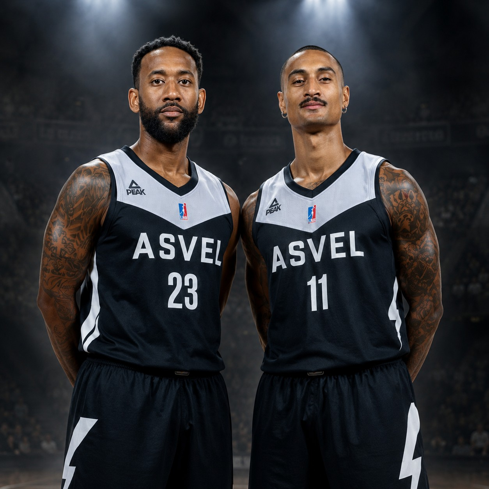
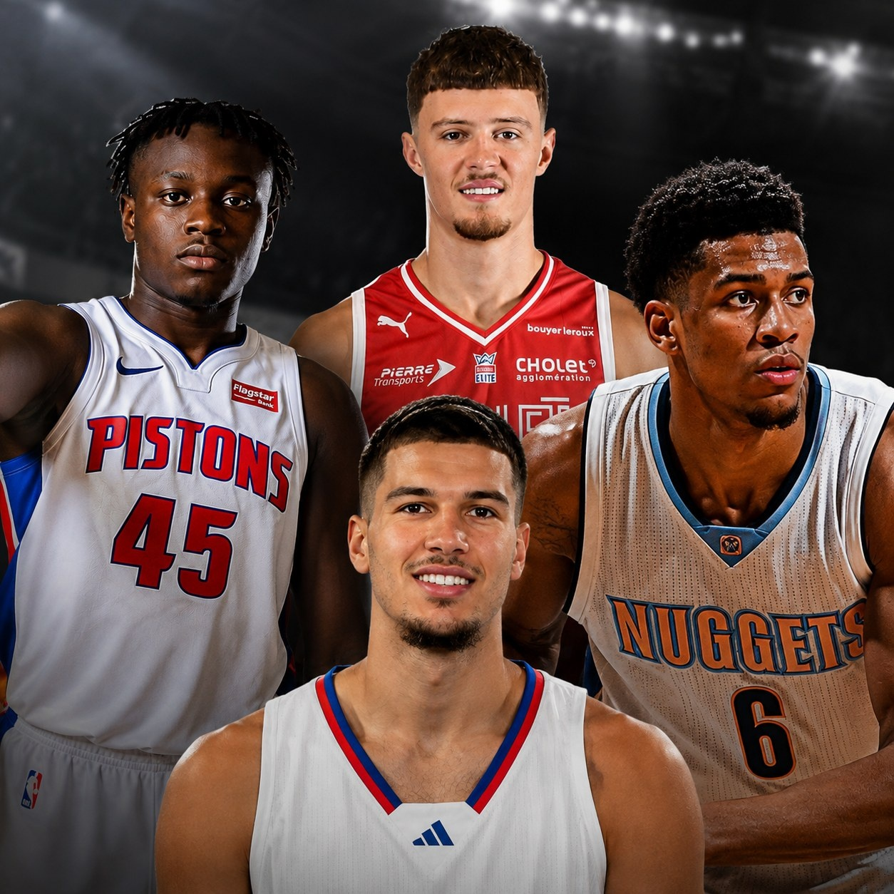
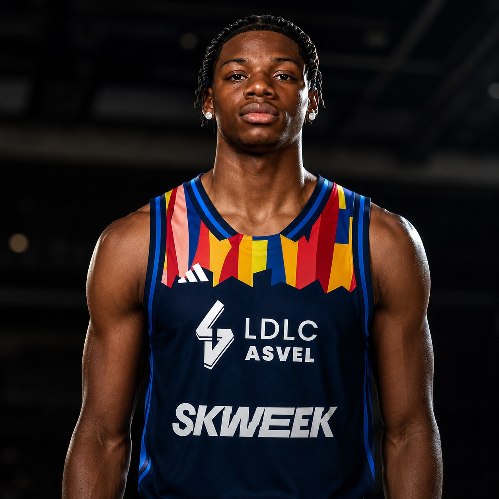
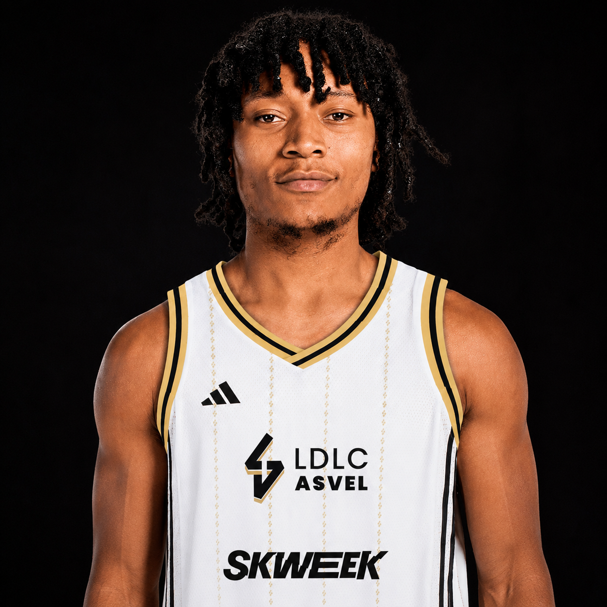
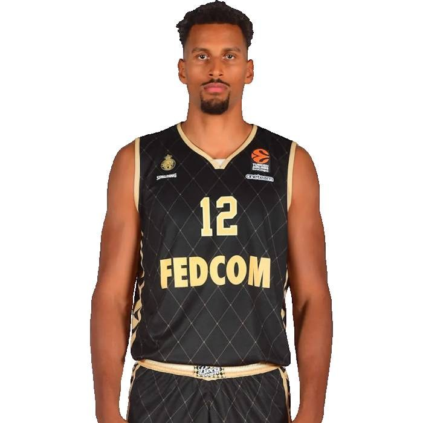
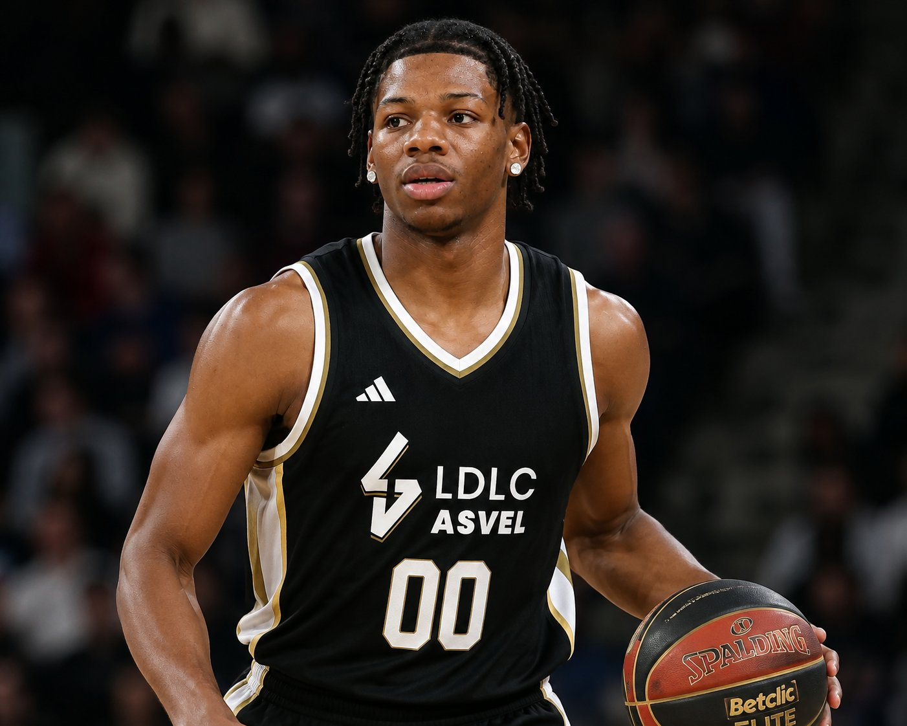
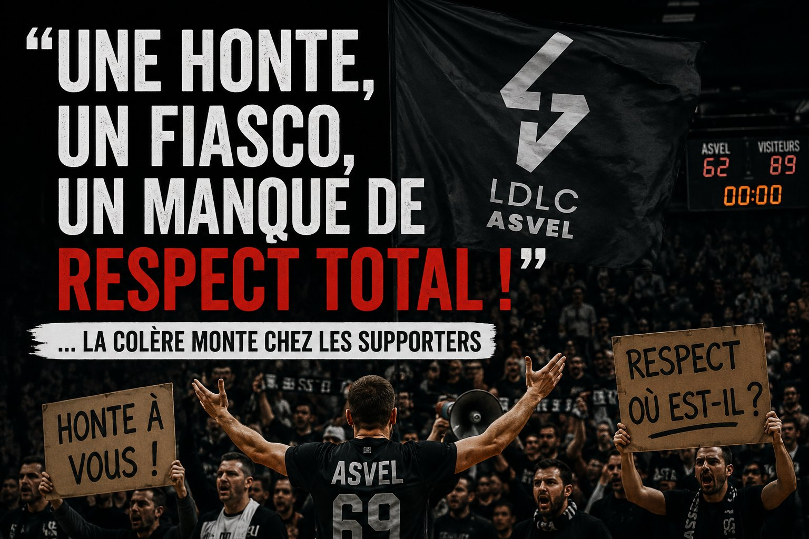
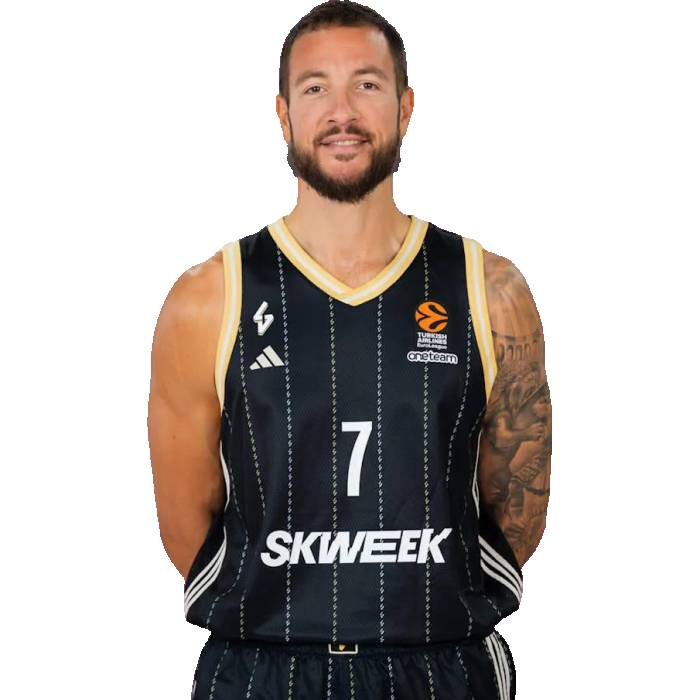
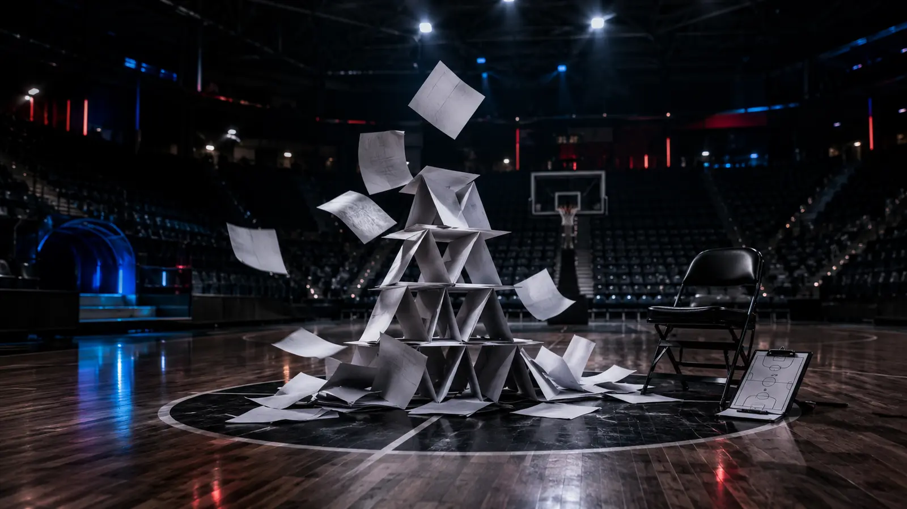
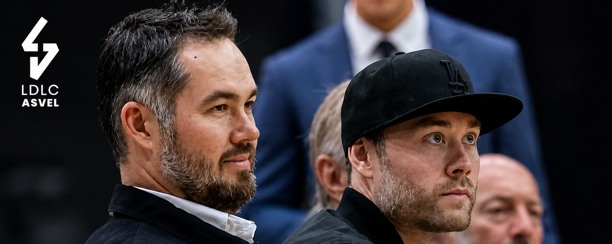

Officiel · 21 août 2026
Lire l’articleOfficiel : Hugo Besson portera le numéro 25 à l’ASVEL
Le club a officiellement confirmé la signature d’Hugo Besson, arrière-meneur créatif passé par la Draft NBA et les Metropolitans 92.
Les dernières informations sur le mercato, l’EuroLeague, la Betclic ÉLITE et la vie du club.
Le club a officiellement confirmé la signature d’Hugo Besson, arrière-meneur créatif passé par la Draft NBA et les Metropolitans 92.
Selon Le Progrès, Hugo Besson, Mathis Dossou-Yovo, Tremont Waters et TyTy Washington seraient attendus, sans confirmation officielle du club.

Deux figures expérimentées du club restent à Villeurbanne pour la saison 2026-2027, même si le rôle exact de Lighty reste flou.

Mise à jour : sa signature serait en bonne voie selon Le Progrès, parmi un lot de 4 recrues annoncées avant la reprise, sans confirmation officielle.

Mise à jour : sa signature serait en bonne voie selon Le Progrès, parmi un lot de 4 recrues annoncées, sans confirmation officielle.
Mise à jour : c'est désormais officiel, Hugo Besson s'engage avec l'ASVEL.
L’arrière français de 25 ans, passé par la Draft NBA, a été cité par le journaliste Gabriel Pantel-Jouve parmi les noms évoqués autour du club.

L’ailier américain de 36 ans, fort de 14 saisons NBA et de deux finales disputées, rejoint le club villeurbannais.

L’ailier américain de 27 ans, libre depuis la fin de son contrat avec le FC Barcelone, s’engage avec le club villeurbannais.

Axel Toupane, Sekou Doumbouya et Daniel Batcho font partie des noms étudiés pour compléter le contingent JFL villeurbannais.

Le jeune meneur de 19 ans quitte le SLUC Nancy pour Villeurbanne, où il portera le numéro 3.

Selon BasketNews, l’ancien premier tour de Draft NBA de 24 ans est en discussions avancées avec Villeurbanne.

Mise à jour : la piste ne s’est finalement pas concrétisée, Cornelie se dirigerait vers la Chine plutôt que Villeurbanne.

Le club villeurbannais est en discussions avancées avec le SLUC Nancy pour ce meneur-arrière de 19 ans, formé localement.

Manque de communication, instabilité permanente, départs à répétition : chez les supporters de l’ASVEL, la frustration a laissé place à une véritable rupture de confiance.

L’ancien intérieur villeurbannais revient sur un projet ambitieux, mais fragilisé par les changements d’entraîneurs et le manque de continuité.

Budget réduit de 59 à 24 millions d’euros, recrues déjà reparties : le projet initial de l’ASVEL s’est brutalement effondré.

L’Olympiacos versera 400 000 euros à l’ASVEL pour libérer l’ailier-fort sénégalais.
Le départ de Mbaye Ndiaye se précise. Selon le journaliste Chema de Lucas, le joueur de 2,04 m est sur le point de finaliser son arrivée à l’Olympiakos. L’accord avec le joueur serait trouvé, même si l’opération n’a pas encore été officialisée.
Sous contrat avec Villeurbanne jusqu’en juin 2029, Ndiaye ne quittera pas gratuitement l’ASVEL. Son buyout serait estimé à 400 000 euros.
Cette opération intervient un mois seulement après sa prolongation. La révision du budget du club a depuis profondément modifié la construction de l’effectif.
Arrivé en 2023 en provenance de Blois, Ndiaye s’est progressivement imposé malgré une grave blessure au genou en décembre 2024.
Les dernières formalités doivent désormais être réglées avant l’annonce officielle.

Plusieurs investisseurs potentiels, dont Joey et Jesse Buss, reçus mercredi à Lyon par le président de l’ASVEL.

Le pivot expérimenté est lié au club villeurbannais jusqu’en 2028.
L’ASVEL tient un renfort majeur pour sa raquette. Après trois années à l’Étoile Rouge, Joel Bolomboy rejoint Villeurbanne pour deux saisons.
En 2024-2025, il affichait 10,2 points et 8,3 rebonds de moyenne, avec 65,5 % de réussite aux tirs.
Après ses passages en NBA, Bolomboy a rejoint le CSKA Moscou en 2018 et remporté l’EuroLeague dès sa première saison européenne.

L’ailier-fort américain vient renforcer la raquette et apporter son adresse extérieure.
Nate Sestina rejoint l’ASVEL pour une saison. L’Américain évolue principalement au poste 4, mais peut également dépanner au poste de pivot.
Mobile et capable de sanctionner à trois points, il pourra offrir davantage d’espace aux arrières. Avec Fenerbahçe en 2023-2024, il avait inscrit près de 39 % de ses tentatives extérieures en EuroLeague.
Passé par Türk Telekom, Fenerbahçe, Valence et Milan, Sestina connaît les exigences du plus haut niveau européen.